Encontro 01
A linguagem Python e o IDLE
Abertura do curso, um pouco de história e o seu primeiro programa.
Boas-vindas!
Que bom ter vocês aqui.
Em dez encontros, a gente sai do zero e chega num sistema de pedidos que roda no seu computador. Feito por você.
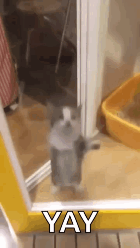
Daniel Becker Bortoluzzi
Formado em Sistemas de Informação pelo Instituto Federal Catarinense, com especialização em Engenharia de Software.
Diretor de Tecnologia do Laboratório de Pesquisa, Desenvolvimento e Inovação em IA Generativa do Centro Inovação Blumenau. Professor de Python e IA no Senac Blumenau.
Como eu cheguei aqui
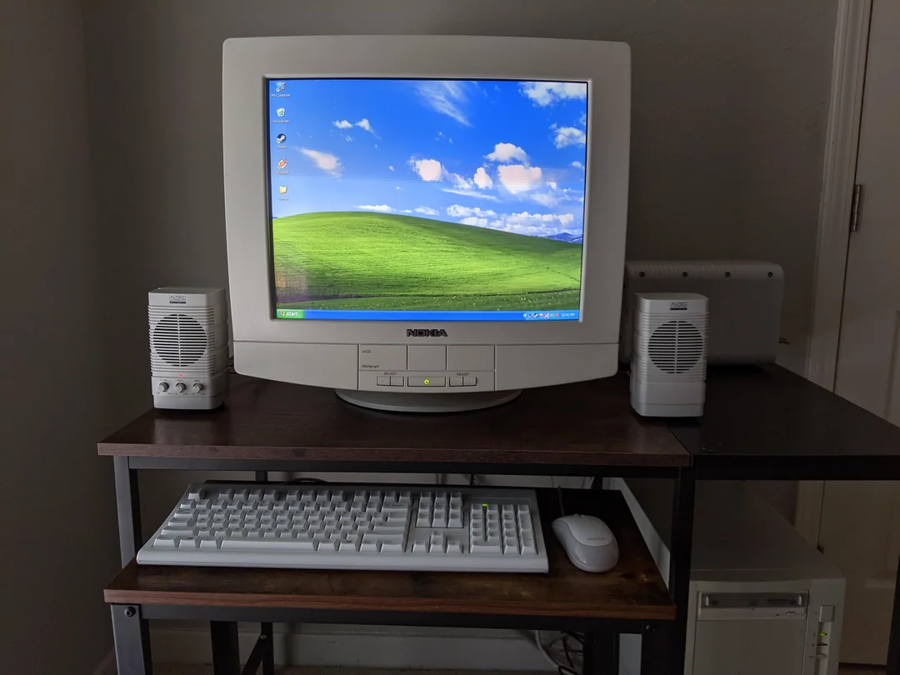
Primeiro PCe muita curiosidade Faculdadee o primeiro emprego numa empresa
Faculdadee o primeiro emprego numa empresaE depois da faculdade
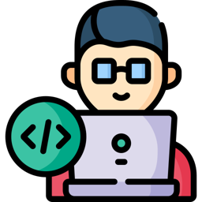
Desenvolvedor back-endna Lizard TI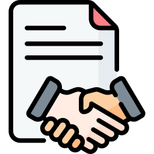
CTOparte comercial e empreenderOnde eu trabalho hoje
No laboratório de IA generativa do Centro de Inovação Blumenau, a gente desenvolve projetos de inteligência artificial para empresas.
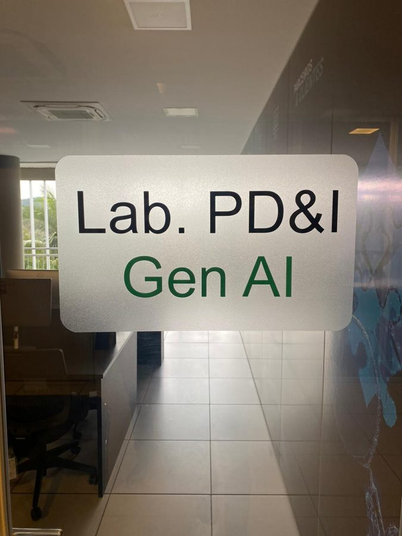
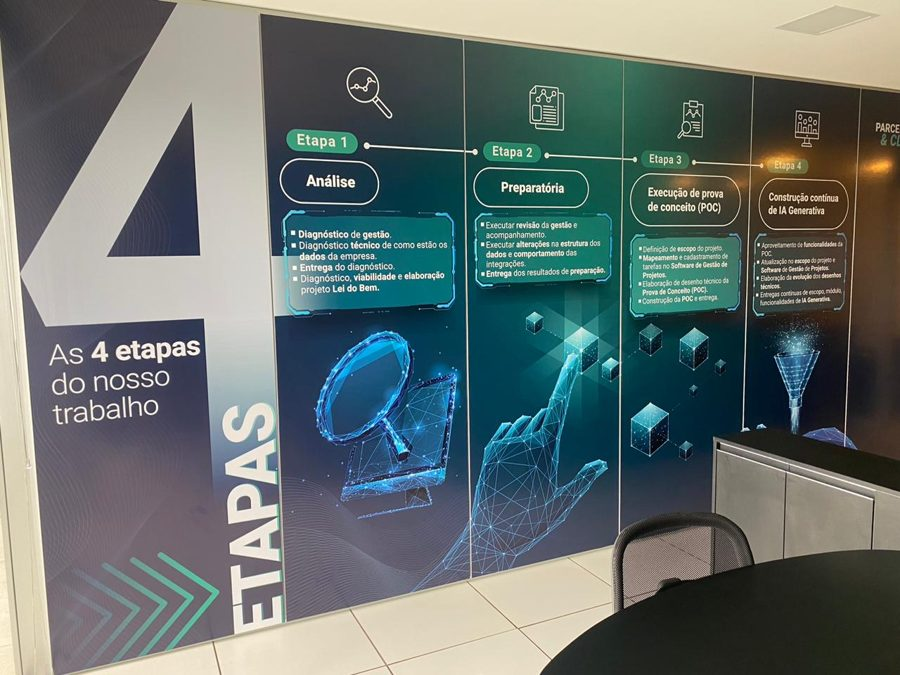
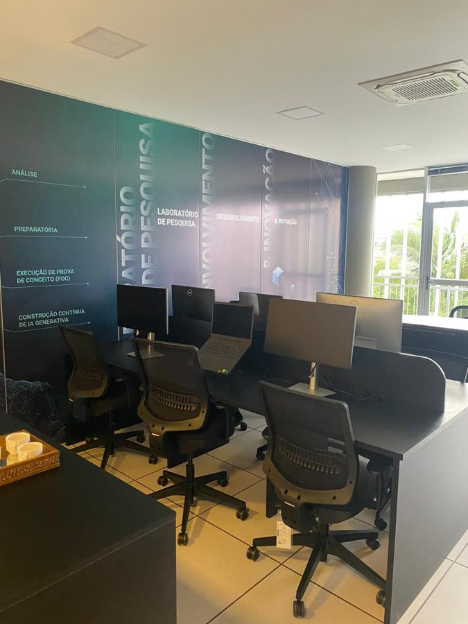
Agora é a vez de vocês
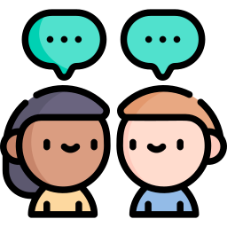
- Seu nome
- Se trabalha, em qual área
- Já teve contato com programação?
- Por que se inscreveu no curso
- O que espera levar daqui
Quatro conselhos antes de começar
- Faça o que você gosta. Se ainda não sabe o que é, experimente sem medo de perder tempo.
- Pratique fora da aula. Programação se aprende digitando.
- Converse com os colegas. Muita dúvida se resolve na cadeira do lado.
- Não se frustre com o erro. O Python vai reclamar bastante, e é assim que se aprende.
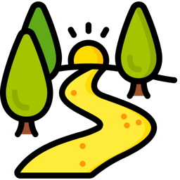
O que vamos fazer em 30 horas
Dez encontros, divididos em cinco etapas.
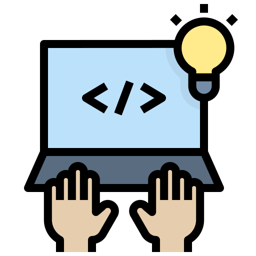
O ambienteinstalar e usar o Python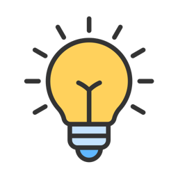
A lógicatransformar um problema em passos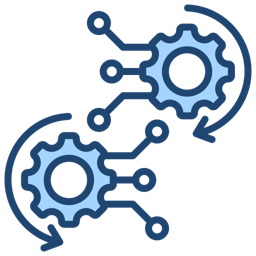
A repetiçãofazer de novo sem reescrever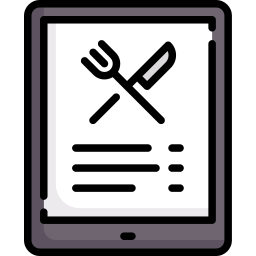
O sistema de pedidosjuntar tudo num programaUm exemplo do começo ao fim
Em todos os encontros, o exemplo é o mesmo: uma lanchonete, com cardápio e pedidos.
- Hoje: mostrar o cardápio na tela
- Depois: calcular o total do pedido
- Mais adiante: dar desconto e cobrar a entrega
- No fim: um sistema de pedidos feito por você
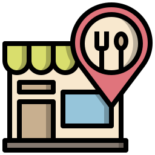
Combinados
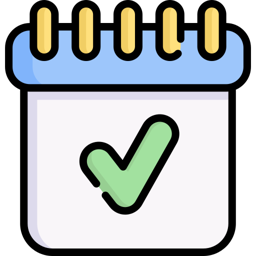
FrequênciaVocê pode faltar no máximo 2 encontros. A terceira falta reprova.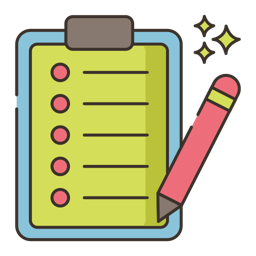
Ticket de saídaTodo encontro termina com um exercício curto, entregue antes de ir embora.Qual aplicativo você mais usa no dia a dia?
WhatsApp, o app do banco, Instagram, o mapa do celular.
Tudo isso é software
Software é um conjunto de instruções que diz ao computador o que fazer, como fazer e quando fazer.
O celular é o hardware: a parte que você pode tocar. O aplicativo é o software, as instruções que rodam nele.
Um programa é uma receita
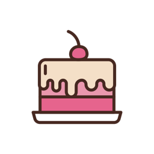
- Ingredientes: os dados que entram
- Modo de preparo: os passos, na ordem certa
- O bolo: o resultado que sai
Seguindo a receita direitinho, o bolo sai igual toda vez. Com programa é a mesma coisa.
E quem escreve a receita?
O computador só entende números: zeros e uns. A gente entende português.
A linguagem de programação fica no meio do caminho. É um jeito de escrever que a gente consegue ler e o computador consegue executar.
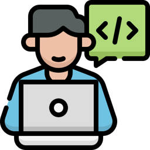
A mesma mensagem em duas linguagens
public class Ola { public static void main(String[] args) { System.out.println("Olá!"); } }
print("Olá!")
As duas mostram Olá! na tela. Em Python você escreve só o que importa.
De onde veio o Python
Guido van Rossumcomeça o projeto num fim de ano, na Holanda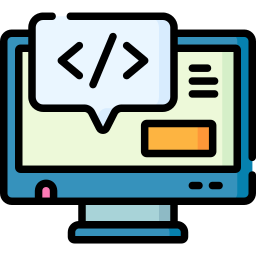
Primeira versãoaberta para quem quisesse usar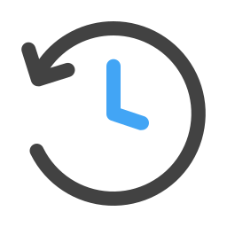
Python 3a versão que usamos até hojeE o nome?
Não vem da cobra.
O Guido era fã do Monty Python, um grupo de comédia inglês dos anos 70. A cobra só entrou depois, no logo.
Por que tanta gente usa Python
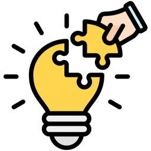
Serve para muita coisado script pequeno ao sistema grandeOnde o Python aparece
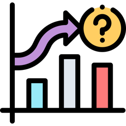
Análise de dados Automação de tarefas
Automação de tarefasGoogle, Netflix, Spotify, Uber e Amazon usam Python. E ele está no topo dos rankings de linguagens mais usadas há alguns anos.
Prática · 10 minutos
Um aplicativo que você usa
No fim, três pessoas contam para a turma.
Intervalo
Voltamos às 20h30. Na volta, o computador fica ligado.
O que você escreve tem nome
Código-fonte é o texto do programa, escrito numa linguagem como o Python.
Em Python, ele fica num arquivo que termina em .py, como cardapio.py.
O computador não lê esse texto direto. Alguém precisa traduzir.
Dois jeitos de traduzir
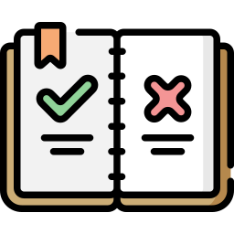
CompiladorComo a tradução de um livro: traduz tudo antes, e só depois alguém lê. Se uma frase está errada, o livro não sai.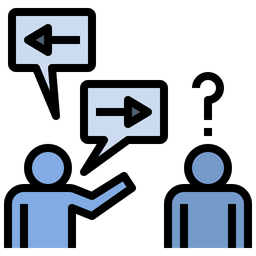
InterpretadorComo o intérprete de uma palestra: traduz frase por frase, na hora. Se ele trava numa frase, o que veio antes já foi dito.O Python é interpretado: lê e executa uma linha de cada vez. Daqui a pouco você vê isso acontecer na tela.
Instalando o Python
- No navegador, abra python.org e entre em Downloads.
- Baixe a versão mais nova para Windows e abra o instalador.
- Se aparecer a caixa Add python.exe to PATH, marque.
- Clique em Install Now e espere terminar.
- No menu Iniciar, procure IDLE. Se ele aparece, deu certo.
Nos computadores do laboratório o Python pode já estar instalado. Nesse caso, vá direto ao passo 5.
Conhecendo o IDLE
O IDLE vem junto com o Python. É onde você vai escrever e rodar seus programas, e ele tem duas janelas.
Shell: testa uma linha e responde na hora.
>>> 2 + 3 5 >>>
Editor: guarda o programa inteiro num arquivo.
print("Olá!") print("Tudo bem?")
Deixe o ambiente do seu jeito
- No IDLE, abra o menu Options › Configure IDLE.
- Na aba Fonts, mude o tamanho para 16.
- Clique em OK e veja a letra do shell crescer.
- No Explorador de Arquivos, abra Documentos e crie a pasta
python-curso.
Tudo o que você fizer no curso vai para essa pasta. Programa salvo em qualquer lugar se perde.
Primeira conversa com o Python
>>> print("Olá, mundo!") Olá, mundo!
- No shell, logo depois do
>>>, digiteprint("Olá, mundo!"). - Aperte Enter.
- Confira a resposta em azul, logo embaixo:
Olá, mundo! - Troque o texto entre as aspas pelo seu nome e rode de novo.
O que tem dentro dessa linha
print("Olá, mundo!")
printé o comando que mostra alguma coisa na tela.- Os parênteses guardam o que vai ser mostrado.
- As aspas avisam: isto é texto, mostre do jeito que está.
Olá, mundo!é o texto. Pode ser qualquer frase.
Com aspas e sem aspas
Antes de rodar, tente adivinhar o que aparece em cada linha.
>>> print("2 + 3") 2 + 3 >>> print(2 + 3) 5
Entre aspas, o Python mostra o texto do jeito que está.
Sem aspas, ele faz a conta e mostra o resultado.
Agora num arquivo
# meu primeiro programa print("Olá, mundo!") print("Estou aprendendo Python.")
- No IDLE, abra File › New File.
- Digite as três linhas.
- Salve com Ctrl+S, dentro de
python-curso, com o nomeola.py. - Rode com F5.
- Confira no shell as duas frases. A linha do
#não aparece.
A linha que começa com # é um comentário. O Python ignora, e ela serve para você explicar o código.
Quando o Python reclama
Erro faz parte. Leia sempre a última linha vermelha: é ali que ele diz o que aconteceu.
print("Olá, mundo!) SyntaxError: unterminated string literal
Print("Olá, mundo!") NameError: name 'Print' is not defined.
No segundo caso, ele ainda pergunta: Did you mean: 'print'? Quer dizer "você quis dizer print?".
As duas primeiras linhas rodaram antes do erro
print("Bem-vindo à lanchonete!") print("Hoje tem pastel.") Print("Bom apetite!")
Bem-vindo à lanchonete! Hoje tem pastel. Traceback (most recent call last): File "C:\Users\aluno\Documents\python-curso\teste.py", line 3 Print("Bom apetite!") NameError: name 'Print' is not defined. Did you mean: 'print'?
Prática · 15 minutos
Seu cartão de apresentação
apresentacao.py na pasta python-curso.print para cada.Na correção, dois colegas mostram o programa no projetor.
O cardápio da lanchonete
# cardápio da lanchonete do professor print("===== LANCHONETE DO PROFESSOR =====") print() print("1 - Pastel de carne ......... R$ 8,50") print("2 - Pastel de queijo ........ R$ 8,00") print("3 - Caldo de cana ........... R$ 6,00") print() print("Faça o seu pedido no balcão!")
- Crie o arquivo
cardapio.pye digite o código. - Rode com F5.
- Confira o cardápio no shell. Cada
print()vazio virou uma linha em branco.
Desafio · 45 minutos
O cardápio da sua lanchonete
=====.Por enquanto o preço é só texto, e o Python não sabe somar R$ 8,50. Isso muda na etapa da lógica.
Ticket de saída · 15 minutos
Antes de ir embora
- Salve o seu cardápio como
ticket01_seunome.py. - No topo, escreva num comentário: qual a diferença entre o shell e o editor?
- Rode com F5 e confira que não aparece nada em vermelho.
- Entregue o arquivo do jeito que o professor indicar.
O que fica de hoje
- Software é instrução: diz ao computador o que fazer, como e quando.
- O Python nasceu em 1989 e hoje está em IA, dados, automação e web.
- O Python é interpretado: executa uma linha de cada vez.
- No IDLE, o shell testa uma linha e o editor guarda o programa num
.py. printmostra na tela, texto vai entre aspas e erro se lê pela última linha.
Amanhã, às 9h: algoritmo, fluxograma e um programa que pergunta coisas ao usuário.